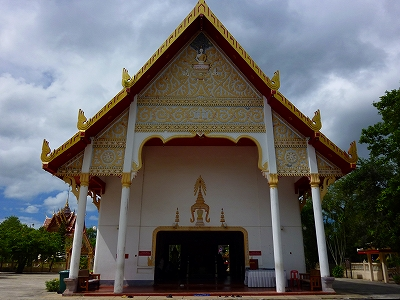

泰国珍寺修行の旅、お次はメジャー寺院に行ってみる。

向かったのはプーケット北部にあるワットプラトンというお寺。
あ、もちろん映画の「プラトーン」とも「ソソソクラテスかプラトンか～」のプラトンとも関係ないすからね。
プラは仏像、トンは金だそうで、いうなれば金仏寺。
メジャー寺院、といったものの実際にはひっそりとした佇まいで、地元の人が数人昼寝してるだけでした。
まずはコンクリ動物達がお出迎え。
今更ながら思うがほんとタイのお寺ってコンクリの動物飾るの好きですねー。
まあ、信仰心が篤い人が寄付したりするのだろうが、お寺にわざわざ動物のコンクリ像を設置する意味が良く判らない。
いや、判らなくもないが必然性はあまり感じない。
何となくあったほうが良いかな、程度なのだろうか。だとしたらあまりにも脳内ダダ漏れ過ぎやしまいか。
こちらはホンモノの鶏です。
片隅には四面仏を祀るサンプラブラームも。何故か大砲がセッティングされているぞ。
で、本堂。先ほども述べたように参拝客はだれもいない。

内部はガラーンとしていて中央に本尊と思われる仏像が。
大船観音ばりの半身像。
まるで下半身が埋まっちゃっているかのようなスタイルだが、これには深～い訳があるのだよ。
昔々、ある小僧がおったそうな。
ある日その小僧が地面からニョキっと突き出た棒に飼っている水牛を繋いだら、数日後病で死んでしまったそうな。
その後小僧の父親が夢のお告げでその棒が仏像の頭頂部だったことを知り、掘り出したんだそうな。
でもあまりの大きさに胸までしか掘れなかったんだとさ。
今ではそこにお堂を建て、お寺として祀っているんだそうな。めでたしめでたし。
…てな事らしい。
怖いの～。仏罰。
そういえば仏頭が尖ってツノみたくなってるのって南方上座部仏教の特徴ですかね。
手前には同じ形の前立仏が。
こちらには金箔がバリバリ貼りつけられている。本尊には貼らないのですね、怖いから。
にしても殺風景なお堂である。
タイのお寺といえば華やかな祭壇、どぎつい壁画、濃い目の柱飾りが標準装備なのだが、ここにはそのような要素はほぼナシ。
脇役の仏像たちも素っ気なく床に直接置かれている。
欄間のようなところに置かれたミニ仏。
窓の飾りは立派だったけど。
そんなこんなでイマイチ盛り上がらないまま参拝を終え、外に出た。
鐘楼の1階に気になるお方を発見。
コレはおまるでウンチ中！…なのか？
いやいや。見ればズボン穿いてるし。
何かおまるというよりは棒に何かを縛っているご様子。
はっ！コレはもしかして…
先ほどの「仏頂縛った罰で死亡事件」の様子を再現したものなのでは！
子供の前にある棒というのはつまり…
なのか！
オレ様お得意の最先端ＣＧで再現してみましたよ。こんな感じですかね。
門の前にもう一体チビッコ像があった。
コレもやはり「仏頂縛った罰で死亡事件」のコンクリ像であった。
恐らくこの寺オリジナルの説話をベースにしてあるだけに他では見られない貴重なタイプのコンクリ像だと思う。
先ほどの動物といい、この像といい、わざわざコンクリ像にしたためるところがタイっぽくて私は大大好きです。
次の修行へGO！
泰国珍寺修行 南へ
珍寺大道場 HOME